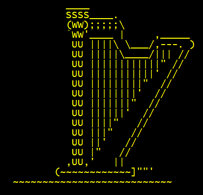

One of our planes, dubbed "The Swallow," taking off at a test flight.
Triton UAS is a interdisciplinary student-led engineering project team which constructs an autonomous plane to compete in the
international AUVSI SUAS competition. The team is split into four subteams: Airframe, Embedded,
Software, and Business. As a lead member in the Software team, it is my and my co-lead's responsibility to ensure that all of the
software on the plane runs without error so that we can score points by autonomously identifying ground targets using machine
learning, pathing our plane to hit waypoints while avoiding obstacles, and sending this information over HTTP to the judging server.
Here is a compilation of the projects I have worked on which I am most proud of.
Backend Redesign
Upon joining the club, I decided to start working on the Ground Control Station backend, called Hub. However, the old version
of Hub was not well documented, and nobody who had originally worked on it was still around. Therefore, we decided to rebuild
it from the ground up. We decided to create just a simple HTTP server because we did not need anything too complicated. The
purpose of Hub is to manage the flow of information between the other components of the software pipeline, namely the Computer
Vision Server and Path Planning Server, the competition's judging server, and the plane itself.
Project Information
Status
Languages Used
Number of Contributors
Ongoing
Go
About 6
Personally, I have been heavily involved in the structure of the server and in defining what endpoints are necessary. Also,
I completely implemented the connection with the judging server. Currently, I now have more people on this task, so we have
multiple people working on the computer vision connection, path planning connection, and the plane connection itself.
Skills Developed
Linux Command Line
Go
HTTP
Concurrent Programming
Docker
RRT Path Planning
In order to complete the competition's new dynamic obstacle avoidance task—essentially avoiding another team's plane that
is also flying at the same time—we decided to redesign our path planning algorithm, since the old one could not handle
these dynamic changes. As a team, we decided to start implementing an algorithm that utilizes RRT, an algorithm which
in essence generates paths by randomly sampling points in a space and then finding the nodes and edges which provide
the least costly path. This algorithm will be much more applicable to the dynamic obstacle task, and should
cover more edge cases in obstacle placement that our old algorithm could not solve.
Project Information
Status
Languages Used
Number of Contributors
Ongoing
Python
About 6
Since I was am the lead member who started this project, I have been the main person in charge of the planning, from what
resources to use to how to structure the codebase. I have managed rougly 5 other members making sure that we are all coordinated
and working on different parts of the project simultaneously. Also, I have spent lots of time understanding and modifying a
reference implementation to fit our specific needs.
Skills Developed
Project Management
Python
Pathing Algorithms
HTTP
Linux Command Line
Personal Projects
Harp of the Gods
A real-time battle in the game

The "Harp of the Gods"
This was a sort of pet project through which I essentially learned all of my background in programming knowledge. This project went
through a number of iterative phases as I learned more and more programming constructs. The first iterations (which unfortunately
no longer exist since I didn't know about version control at the time) were much simpler games that didn't utilize OOP. The version
linked here is an "open-world" RPG game inspired by the original Legend of Zelda. You travel around the world, find dungeons, and
eventually are able to enter the final dungeon once you have gathered all of the Harp pieces.
Looking back at my work I'm confused by a lot of the decisions I made, but I think it's cool that I was able to ignite
a passion for programming while developing something over a large period of my life.
Skills Developed
C++
Object Oriented Programming
Basic Git/GitHub
Chrono Defenders
A turn-based battle versus a Ghost
The first section of the game's map
After months in early covid quarantine, I wanted to go back to Harp of the Gods and continue developing it, but by that time
I realized that it would be easier and more fulfulling to start from scratch and learn from all the mistakes I made previously.
So, I decided to make a new game in the same vein, but I wanted to make it with better programming habits and methodologies. If the
inspiration for the previous game was the original Legend of Zelda, then the inspiration for this game was definitely Slay
The Spire, except with my own spin on it. In this game, you control a party of three characters: The Samurai, The Sorcerer, and
The Gunslinger through a series of battles. The main gameplay loop involves defeating enemies, gaining experience, finding
items and learning new, more powerful moves. I think the battle system is somewhat sophisticated, so while it definitely isn't
incredibly balanced, I find that there's a surprising amount of depth in the combat that even I didn't expect while I was making
it.